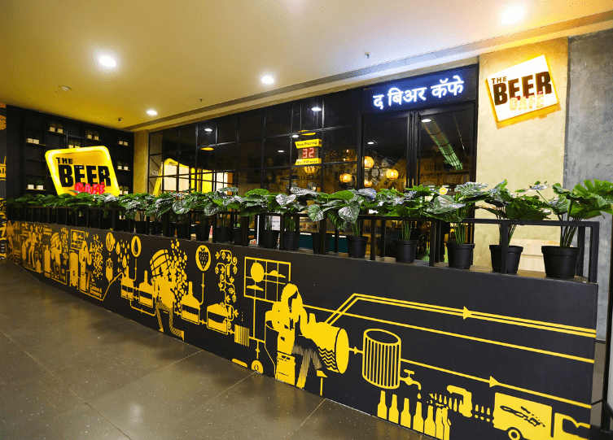
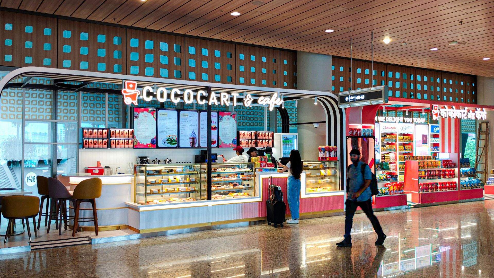
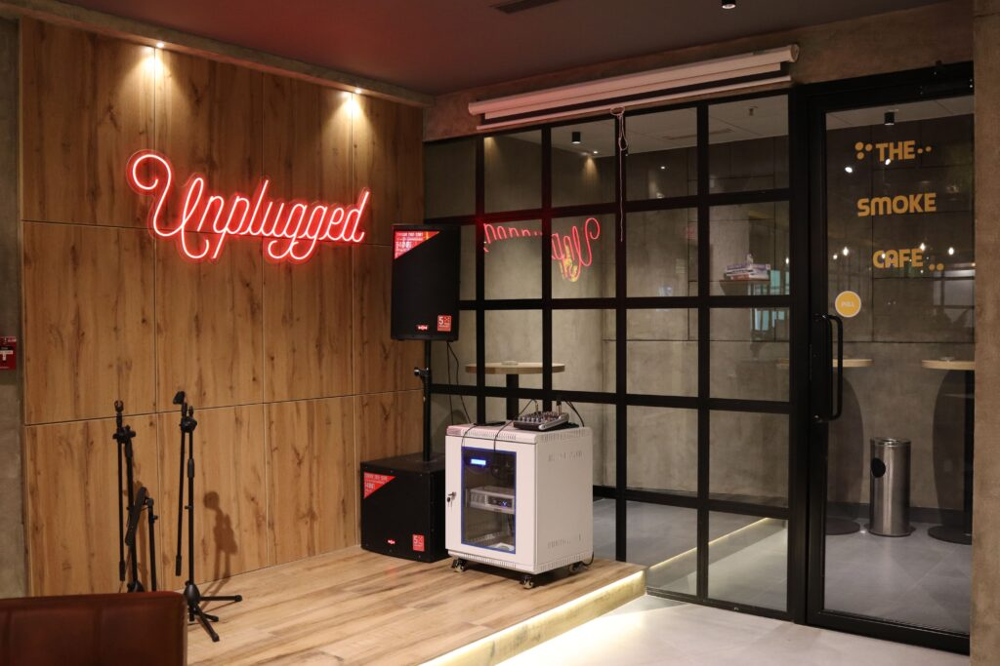
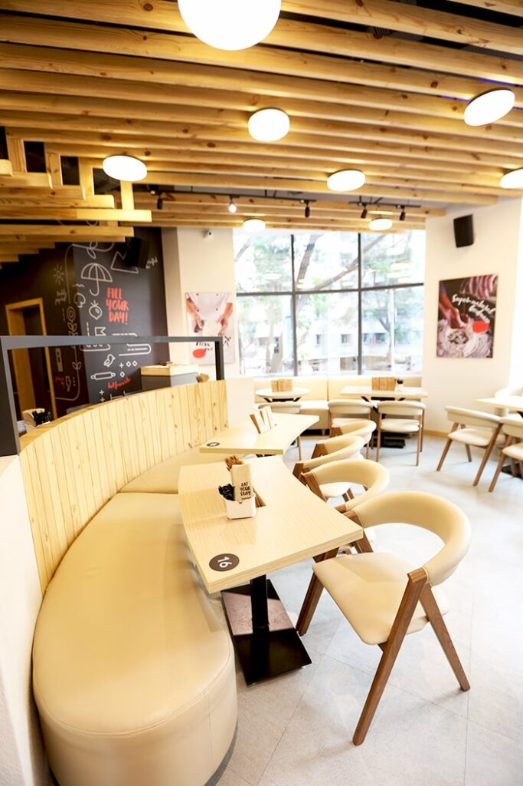

High rent makes wasted space expensive
Poor circulation, oversized BOH or inefficient seating is not just a design issue. It affects the economics of the outlet every month.


Opening an F&B space in Mumbai? Design for the site you actually have – not the one in the moodboard. Mumbai restaurant projects come with a particular kind of pressure: expensive square footage, compact back-of-house areas, building constraints, difficult exhaust routes, high footfall, delivery demand and an opening date that usually matters financially from day one.
SprintCo is based in Mumbai and works across restaurant, café, bar and QSR formats. Our portfolio includes Mumbai projects such as Pizza Hut, Blue Tokai, Sandoitchi, BrewDog, Oceans 11, The Beer Café, Tuskin Coffee and others.
Our role is to connect the idea with the realities of the site – concept, planning, brand, MEP and build coordination under one F&B-focused process.
Poor circulation, oversized BOH or inefficient seating is not just a design issue. It affects the economics of the outlet every month.

In many buildings, the route and discharge point for kitchen exhaust is one of the earliest feasibility questions.

Delivery pickup, customer queues, service movement and kitchen access can collide quickly in smaller footprints.

Work timings, approvals, façade rules, fire systems, material movement and service connections need to be factored into design and build planning.

The space has to communicate the concept fast, especially in high-competition neighbourhoods and mixed-use developments.

Once the lease starts, every avoidable week of design indecision or site rework has a commercial consequence.
| Format | Key design priorities |
|---|---|
| Restaurant | Guest journey, seating, kitchen/service flow, lighting, acoustics |
| Café | Counter, barista workflow, dwell mix, brand and display |
| QSR | Queue, order, pickup, delivery, throughput and rollout |
| Bar / taproom | Bar ergonomics, mood, acoustics, service and late-night use |
| Bakery / dessert | Display, impulse path, queue and packaging flow |
| Mall / food-court outlet | Visibility, approvals, compact services, fast customer decisions |
Format-specific guides: QSR design & build · Café design & build


Performance planning around how guests queue, order, seat and return. Counter logic, seating flow, surfaces and lighting were designed for a fast, warm, high-turnover outlet that stays unmistakably Pizza Hut.
View Pizza Hut
Restrained material design – quartz counters, wooden framing and textured walls – with layered lighting that adds warmth without overwhelming the space, creating a calm café atmosphere that keeps the coffee at the centre.
View Blue Tokai
A compact format that balances quick visits with a warm, casual interior: a clear façade and bold signage outside, practical fast-service zones and comfortable seating inside, so the same space works for a fast bite or a slower conversation.
View Sandoitchi
A 6,000 sq. ft. craft beer destination where murals, neon and greenery flow from indoors to outdoors – delivered from design through to execution.
“From design to execution, SprintCo handled everything.”BrewDogView BrewDog

A themed premium seafood restaurant translated through marine blues, natural textures and wave-inspired forms, without losing operational function.
View Oceans 11
The value is not the pin code of the studio. It is familiarity with restaurant-specific problems: services, kitchen interfaces, high footfall, fast-track decisions, landlord coordination and the operational pressure of opening on time.
SprintCo’s Mumbai base adds practical proximity, while the company’s broader portfolio brings lessons from QSR, café, restaurant and bar projects across India.
Looking for our Mumbai portfolio by neighbourhood? See restaurant, café, bar & QSR interior design in Mumbai.
Cost depends on area, format, site condition, kitchen intensity, finishes and building requirements. A Mumbai project should be budgeted from the actual site and scope rather than a generic per-square-foot rate.
Yes. SprintCo’s portfolio and city coverage include multiple site formats. Mall projects require additional attention to landlord approvals, access, façade rules, services and working hours.
Yes. SprintCo’s Mumbai portfolio includes QSR and café projects such as Pizza Hut, Sandoitchi, Blue Tokai and Tuskin Coffee.
SprintCo lists MEP design as a core service. Exact engineering scope and responsibility should be defined at appointment stage.
A pre-lease or pre-design feasibility review can be valuable, especially for exhaust, electrical load, drainage, ceiling height and BOH planning. The exact advisory scope can be agreed before appointment.

Share the site, area, format, cuisine and target opening. SprintCo can review the operational and technical questions that should be resolved before the design is locked.
Talk to a Mumbai F&B Designer